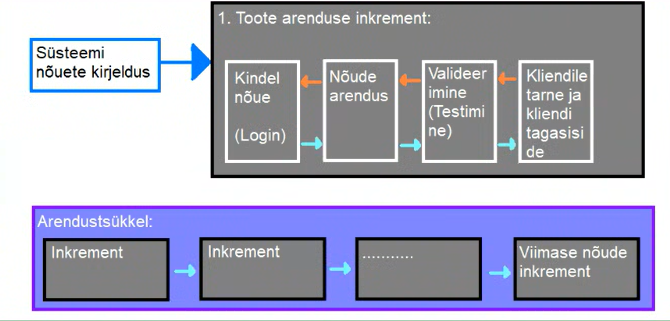

Inkrementaalne arendusmudel on üks viis kuidas lahendada kosemudeli jäika tsüklit. See aitab arendusmeeskonnal
toime tulla muudatustega paremini. Muudatused võivad tulla kas äritegevusest, kliendi soovidest, turu olukorra
muutumisest, tehnoloogiate muutumisest, seaduse muudatustest või siis lõppkasutaja tagasisidest.
Kuna kosemudelis keset arendustööd on muudatustega toimetulek keeruline, on kosemudeli kasutamise puhul
muudatuste sisseviimine üsna kulukas, siinkohal tulebki appi Inkrementaalne arendusmudel. Mudel ise on
ajagraafikupõhine ja ei tugine, erinevalt kosemudelist, täielikult valmiskirjeldatud kavandile. Selles mudelis
saab arendada erinevaid programmi osi samaaegselt või erinevatel aegadel. Inkrementaalses Arendusmudelis aitab
samaaegset arendustööd teha kindlad tegevused mida kosemudelis ei ole. Nende tegevuste abil on võimalik kliendile kuvada
programmile keskse tähtsusega osi, enne kui neid täielikult arendama hakatakse. Tehakse näiteks, kass mingisugune
kasutajaliidese prototüüp, või programmeeritakse vähese testimise läbinud MVP (Minimum Viable Product) mis omab
ainult programmi nõuetes kirjeldatud keskset funktsionaalsust. Näiteks:
Ütleme et tegemist on failikonverteriga, siis ei oma ta suurt kasutajaliidese kujundsut, ega isegi kõiki formaate
mis lõpp-programm teisendama peab, vaid ainult demonstreerib seda funktsionaalsust käsurea abil, osaliselt. Teisendab
ainult kahte-kolme formaati.
| Head küljed | Halvad küljed |
|---|---|
| Klient saab valminud tooteosa kasutada ilma et kogu projekt valmisoleks | Progressi jälgimine on keerukas - arendustööde prgressi ei jälgita endam arendatud nõuete järgi, vaid arendus kiiruse põhiselt - kui palju igas ajavahemikus arendada on võimalik. |
| Iga inkrement on arendatdud erineva arendusmudeli abil | Projekti struktuur degrupeerub iga uue muudatusega, kuna nõuded on muutuvad, ning struktuur ei pruugi muudatuste arvule või muudatuste vajadusele vastupidada - tekib spagett(nigga what??). |
| Kulutused on väiksemad - kuna kasutaja nõuded on muutuvad, aga muudatusi saab sisse viia arendustsükli käigus on muudatuste sisseviimine kulud väiksemad, kui neid teha pärast esmast arendustsükli lõpuleviimist |
Koodi korrashoiu mitteteostamine tõstab hiljem paranduste ja muudatuste sisseviimise kulusid. |

kuna inkrementaalne jka iteratiivne arendus on lihtsalt sarnased sõnad, kipuvad nood inimestel saasi minema,
aga nad on siiski erinevad asjad: